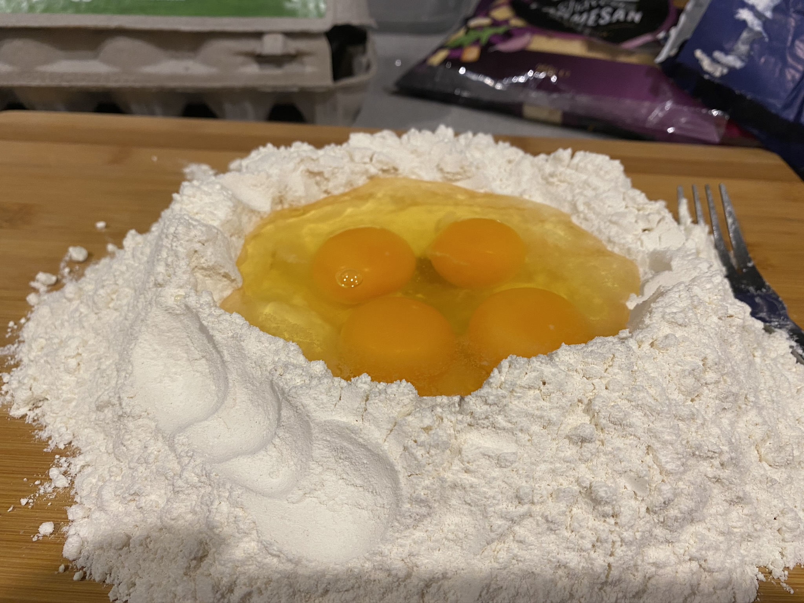
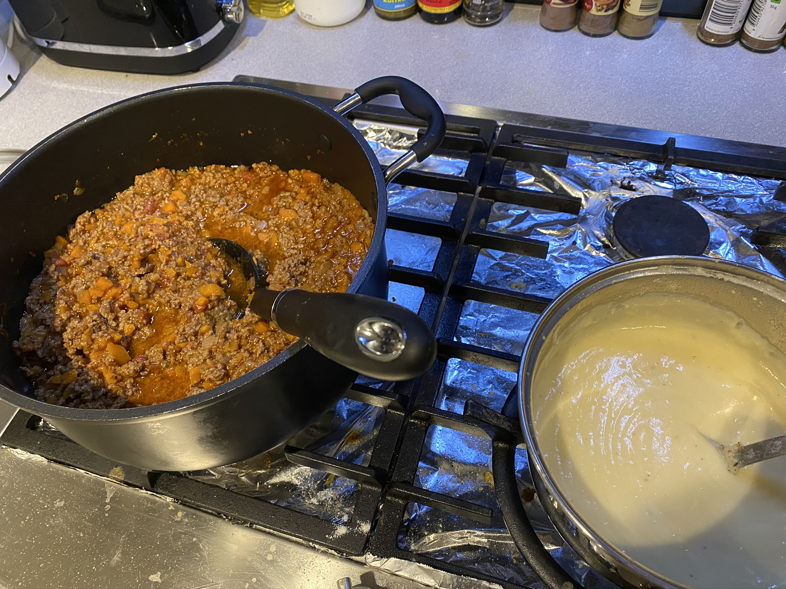
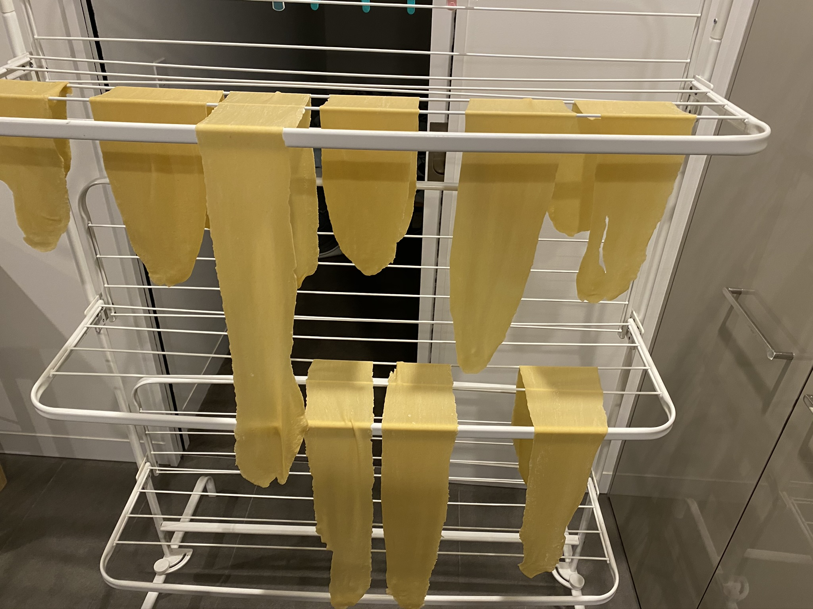

Ingredients
Ragù
1 tbsp olive oil
2 large carrots, finely chopped
1 stick celery, finely chopped
1 can crushed tomatoes
1 tbsp tomato paste
1 small brown onion, finely chopped
2 cloves garlic, finely chopped
1 tsp oregano
1kg ground beef (can also do half pork, half beef)
1 cup beef stock
Bechamel
3 cups milk
2 tbsp plain flour
3 tbsp butter
100g parmesan
1 tsp nutmeg
Pasta (requires pasta machine, can also use store bought lasagne sheets)
500g pasta flour
5 large eggs
Topping
100g parmesan, shredded
200g fresh mozarella, shredded
Serves Eight Total Time: 21⁄2 hours
Start with the pasta. Create a sturdy crater with all the pasta flour and crack the five eggs into the middle. Slowly combine the edges fo the
flour with the eggs until the eggs are fully mixed. Then switch to breading the dough with the hands until it is no longer sticky. Cut the dough into
eight equal portions.

Then start the Ragù. Add 1 tbsp olive to a large pot, and then cook the carrots, onion, celery and garlic over medium heat for 7 minutes. Then add in the
beef (season with salt and pepper) as well as the tomatoes, tomato paste, stock and oregano. Cook for 12 minutes over medium heat.
Meanwhile add the butter to another pot and melt over medium heat. Remove from head and stir in the flour until it is fully mixed. Then return to low heat and
add in the milk slowly until the sauce is no longer thick. Then remove from heat and stir in the parmesan.

Pass the dough through the pasta machine until it is sufficiently thin (setting 6 on Atlas machine), then hang up the pasta until it is ready to
start layering.

Preheat the oven to 400 deg Fahrenheit.
Butter a large baking dish, then start with a layer of pasta followed by a layer of ragù, then bechamel and then the cheese topping. Make the layers sufficiently thin
so you have enough sauces for five or six layers. Keep layering, you can finish off with a layer of cheese on top and then add some pieces of butter to have the
top brown nicely. Bake in the oven for 20 minutes, or until the top is browned. Then remove from oven and let sit for at least 10 minutes before serving.